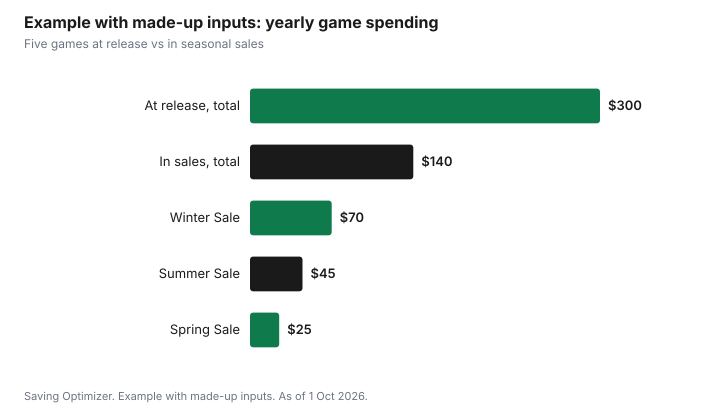

Entertainment · Canada
PC Game Sales Calendar for 2026–27 and Cheaper PC Gaming in Canada

The cheapest time to buy most PC games on Steam is during its four seasonal sales, which Valve announces in advance. On its Steamworks partner page, Valve lists the Winter Sale from 17 December 2026 to 4 January 2027, the Spring Sale from 18 to 25 March 2027 and the Summer Sale from 24 June to 8 July 2027, with the Autumn Sale running 1 to 8 October 2026. Put the games you want on a wishlist, set a budget for each sale, and buy then. Steam's refund policy lets you request a refund for nearly any purchase within 14 days if you have played less than two hours, which is a safety net for a game that does not run well, not a free trial.
Key takeaways
- Steam seasonal sales, from Valve's Steamworks page: Autumn 1–8 Oct 2026; Winter 17 Dec 2026 – 4 Jan 2027; Spring 18–25 Mar 2027; Summer 24 Jun – 8 Jul 2027.
- Themed Fests run in between, such as Steam Scream V from 26 Oct to 2 Nov 2026.
- Steam refunds: request within 14 days of purchase with under two hours played; Steam says it will look at requests outside the rules too.
- Bundles can be good value if you want most of the games in them.
- Unauthorized key resellers carry risks; buy from the store or authorized sellers.
- Example with made-up inputs: a $300 year of full-price buys becomes $140 by waiting for sales.
Sale calendar
Valve publishes its upcoming sale events for developers on the Steamworks documentation site. It says it runs Steam-wide seasonal sales four times a year, and any game released at least 30 days before a sale can take part with a discount. Not every game is discounted in every sale, and discounts are set by each publisher.
| Event | Dates |
|---|---|
| Autumn Sale 2026 | 1 – 8 October 2026 |
| Next Fest (demos) | 19 – 26 October 2026 |
| Winter Sale 2026 | 17 December 2026 – 4 January 2027 |
| Next Fest (demos) | 22 February – 1 March 2027 |
| Spring Sale 2027 | 18 – 25 March 2027 |
| Next Fest (demos) | 14 – 21 June 2027 |
| Summer Sale 2027 | 24 June – 8 July 2027 |
Between the seasonal sales, Valve runs themed sale events called Fests, which promote a category of games. Discounted games are prioritized, but free games and demos also take part.
| Fest | Dates |
|---|---|
| Cooking Fest | 12 – 19 October 2026 |
| Steam Scream V (horror) | 26 October – 2 November 2026 |
| Auto-Battler RPG Fest | 16 – 23 November 2026 |
| Shop Keeper Fest | 25 January – 1 February 2027 |
| Couch Co-Op Fest | 8 – 15 February 2027 |
| Racing Fest | 12 – 19 April 2027 |
| Real-Time Strategy Fest | 10 – 17 May 2027 |
Next Fest is a demo event for upcoming games, not a sale, but it is a free way to try games before deciding whether to wishlist them. Console players have different stores and sales; see video game deals for Black Friday.
Bundles
Bundles group several games for one price, either on Steam itself or through bundle sellers. A bundle is good value when you want most of the games in it. It is a poor deal when you want one game and the rest pad out your library. Check whether you already own any of the games and whether the bundle's price changes to reflect that before you buy.
| Question | If yes | If no |
|---|---|---|
| Do you want at least most of the games? | Compare the bundle price with buying those games alone | Buy the game you want alone |
| Do you already own some of them? | Check whether the price adjusts | Fine |
| Is it from Steam or an authorized seller? | Buy | Be cautious |
| Will you play them within a year? | Good value | Wait for a later sale |
Key sites
Third-party sites sell activation keys for Steam games. Some are authorized retailers of the publisher; others are marketplaces where individuals resell keys, sometimes obtained in ways the publisher does not allow. Keys from unauthorized sellers can be revoked, may not work in Canada, and fall outside Steam's refund policy because the purchase was not made on Steam. If a price looks far below every other store, be cautious. Buying on Steam or from an authorized retailer keeps the refund window and the support.
Refunds
Steam's refund page says you can request a refund for nearly any purchase on Steam, for any reason, if the request is made within the return period and, for games, the title has been played for less than two hours. Valve says it will look at requests even outside those rules. Refunds go back to the original payment method or to Steam Wallet, usually within a week of approval.
| Purchase | Refund rule |
|---|---|
| Games | Within 14 days of purchase and less than two hours played |
| Pre-purchases | Any time before release if not playable before then; after release, 14 days and two hours from the release date |
| DLC | Within 14 days, with less than two hours played in the base game since buying, if not consumed, modified or transferred |
| Steam Wallet funds | Within 14 days if bought on Steam and unused |
| Gifts | Unredeemed gifts within 14 days and two hours; redeemed gifts if the recipient requests it |
| Refund method | Original payment method or Steam Wallet, within a week of approval |
Use the refund window for its purpose: a game that will not run on your PC, a mistaken purchase, or one you quickly realize is not for you. Valve's page says refunds are designed to remove the risk from buying, not as a way to get free games, and that it may stop offering refunds to someone who appears to abuse them. The same page says Valve does not consider it abuse to refund a game bought just before a sale and immediately buy it again at the sale price, which is useful if a sale starts days after you buy.
Wishlists
A wishlist is the simplest budgeting tool for PC games. Add every game you are curious about, then review the list in each seasonal sale. Steam can notify you when a wishlisted game goes on sale. Set a budget for each sale, rank the list, and buy from the top until the budget runs out.
- Add games to the wishlist as soon as you hear about them.
- Before a sale, rank the wishlist by how much you want each game.
- Set a budget per sale, such as a quarter of your yearly gaming budget.
- Buy only from the list, and only what you will play in the next few months.
- Try demos during Next Fest before wishlisting upcoming games.
Example with made-up inputs: a year of PC gaming
These numbers are an example with made-up inputs. They are not Steam prices. A player usually buys five games a year at release for a total of $300. They switch to buying in the seasonal sales, at made-up discounts, and play a free game in between. Two games bought in the Winter Sale cost $70, one in the Spring Sale $25, and two in the Summer Sale $45. The year's total is $140.
| Approach | Games | Total |
|---|---|---|
| Buy at release | 5 | $300 |
| Winter Sale | 2 | $70 |
| Spring Sale | 1 | $25 |
| Summer Sale | 2 | $45 |
| Sale total | 5 | $140 |

PC gaming also has subscription options; compare them with buying in sales using Game Pass versus PS Plus, and see digital versus physical games for console players.
Sources
- Valve, Steamworks Documentation, Upcoming Steam events and sales, partner.steamgames.com, as of 1 Oct 2026. Seasonal sale, Next Fest and themed Fest dates; four seasonal sales a year; 30-day eligibility.
- Valve, Steam Refunds, store.steampowered.com, as of 1 Oct 2026. 14 days and two hours; pre-purchases; DLC; Wallet funds; gifts; refund method and timing.
- The player, games and totals in the example are an example with made-up inputs.
Frequently asked questions
When is the Steam Winter Sale 2026?
Valve's Steamworks upcoming events page lists the Winter Sale 2026 from 17 December 2026 to 4 January 2027.
What are the Steam sale dates for 2027?
Valve lists the Spring Sale from 18 to 25 March 2027 and the Summer Sale from 24 June to 8 July 2027, with Next Fest demo events from 22 February to 1 March and 14 to 21 June 2027.
What is Steam's refund policy?
Steam says you can request a refund for nearly any purchase within 14 days, and for games if you have played less than two hours. Pre-purchases follow the same rule from the release date.
Are cheap Steam keys from other websites safe?
Keys from authorized retailers are fine. Keys from unauthorized resellers can be revoked or region-locked and fall outside Steam's refund policy.
Can I get the sale price if I bought a game just before a Steam sale?
Steam's refund page says it does not consider it abuse to refund a title bought just before a sale and immediately rebuy it at the sale price, as long as the purchase is within the 14-day and two-hour rules.
How do I get notified of Steam sales?
Add games to your Steam wishlist; Steam can notify you when a wishlisted game goes on sale.
Researched and drafted with AI assistance and fact-checked against official Canadian sources. How we create content.
Note: Education only. Sale dates are set by Valve and can change.